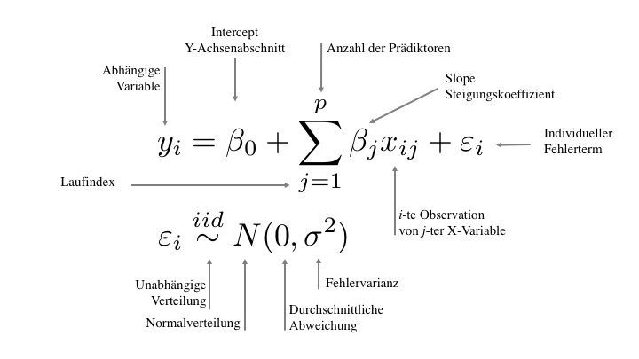
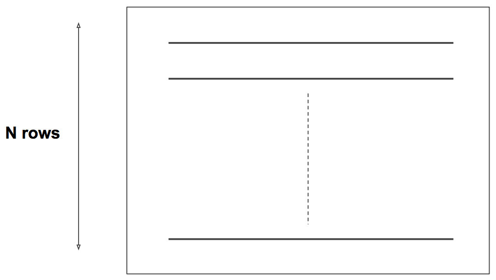
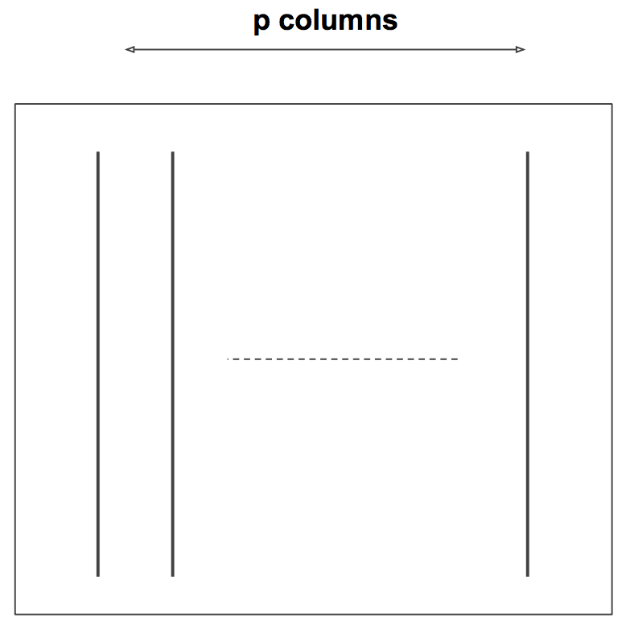
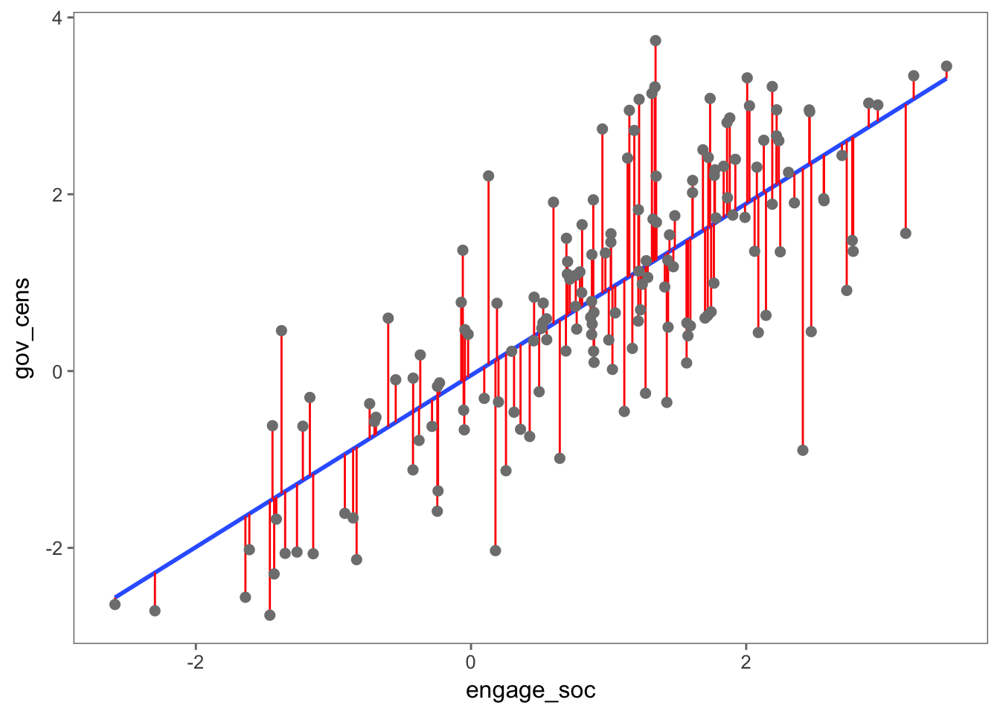
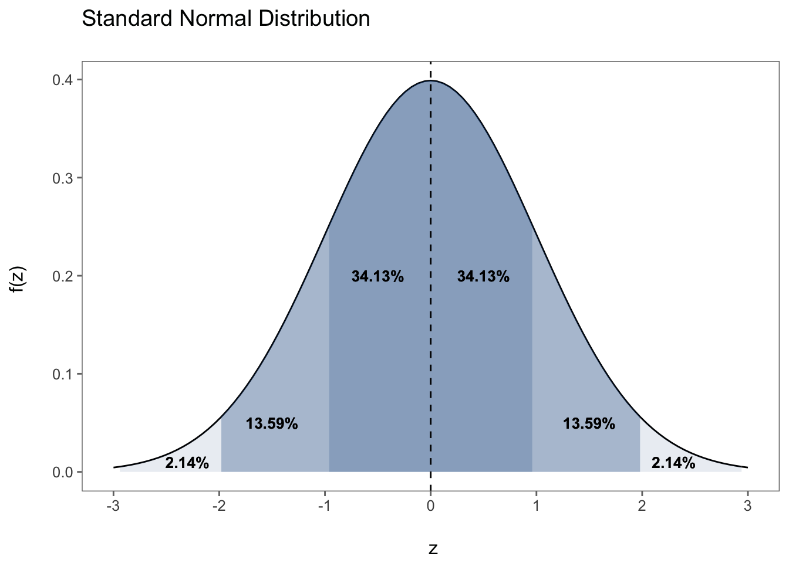
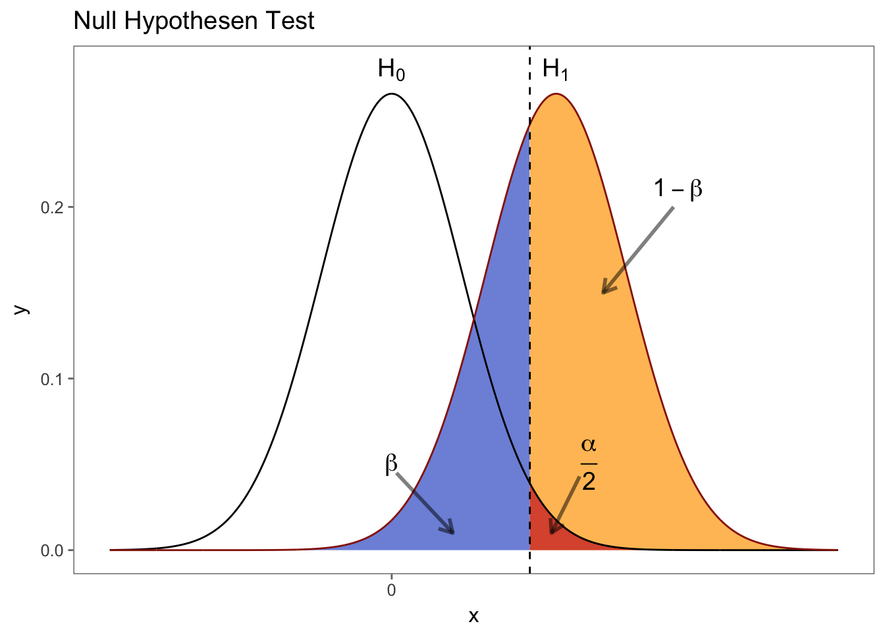

2 Basics
# load data
load(url('https://github.com/systats/macro_project/raw/master/project_macro.Rdata'))
# filter data
dat <- project_macro %>%
filter(year == 2010)Lineare Regression ist das mit Abstand am häufigsten genutzte statistische Modell der empirischen Sozialforschung, da es weniger komplex und einfacher zu interpretieren ist. Allgemein kann damit der Zusammenhang von einer oder mehrerer unabhängigen Variablen \(x\) und einer metrischen, abhängigen Variable \(y\) “erklärt” werden. Dazu wird die Y-Variable als Funktion (in Abhängigkeit) der X-Variablen modelliert.
2.1 Geometrie
Bevor wir zur mathematischen Notation kommen schauen wir uns die geometrische Form einer Regressionsgeraden an. Das Ergebnis einer linearen Regression ist BLUE
Best Linear Unbiased Estimate
dass bedeutet, wenn keine Fehlspezifikation des Modells vorliegt ist die geschätzte Regressionsgerade die optimale Linie
Eine wunderbar, interaktive Grafik zeigt eine Regressionsgerade und die Kovarianz zweier Variablen correlation von rpsychologist. Nutze den play ground um eine Intuition dafür zu bekommen.
2.2 Theorie
Mathematische Notationen helfen dabei statistische Konzepte besser zu verstehen und die eigenen Modellierungen für andere zu dokumentieren. Eine einheitliche Notation gibt es nicht.
Aus der Schule kennt man die Formel einer Geraden
\[y = mx + b \] wobei m die Steigung und b den y-Achsenabschnitt angibt. Die Steigung m (engl. Slope) ergibt sich aus
\[m = \frac{rise}{run} = \frac{\text{change in y}}{\text{change in x}} = \frac{\Delta Y}{\Delta X} = \beta_1\]
In der Statistik wurden über die Jahrzehnte unterschiedliche Schreibweisen eingeführt die sich jedoch nur formal und nicht inhaltlich unterscheiden. So wird der y-Achsenabschnitt der Regressionsgerade (engl. Intercept) an erster Stelle geschrieben und mit \(\beta_0\). Hinzu addiert wird die (allgemeine) Steigung \(\beta_1\) multipliziert mit der x-Ausprägung und dem unbeobachteten/ individuellen Fehler \(\varepsilon_i\).

Diese Gleichung wird unterschieden in
- Strukturelle Komponente \(\hat y_i = \beta_0 + \beta_1x_i\) und
- Residuen \(\varepsilon_i \sim N(0, \sigma^2/n)\)
\(\hat y_i\) ist ein Schätzwert für jede Beobachtung i basierend auf den \(\beta_k\) Parametern, geschätzt über alle Beobachtungen hinweg. Die Abstände/ Distanzen zwischen den Beobachtungen und Schätzungen \((y_i - \hat y_i) \sim N(0, \sigma^2/n)\) werden als zufälliger Fehler betrachtet der normal verteilt um die Regressionsgerade streut.
Wenn ein Regressionsmodell mehr als eine x-Variable beinhaltet, sprechen wir von einer Input Matrix.
 
Note: (links) Zeilen (Rows) sind die \(n\)-Observationen und (rechts) \(k\)-Spalten (Columns) sind die Variablen/Vektoren. Daher spricht man auch von der \(n\times k\) Matrix.
Zuletzt soll die Logik der Input Matrix verdeutlicht werden. Diese lineare Regression …
\[y_i = \beta_0 + \beta_p x_{ik} + \varepsilon_i\]
mit:
iBeobachtungenpParameterkVariablen
kann zur Veranschaulichung in \(i = 1, ... , n\) einzelne Regressionsgleichungen aufgeteilt werden. Dies dient zur Verdeutlichung, dass die \(\beta\) Parameter werden über alle Beobachtungen hinweg geschätzt (wie ein allgemeiner Trend).
\[y_1 = \beta_0 + \beta_1 x_{11} + \varepsilon_1\] \[y_2 = \beta_0 + \beta_1 x_{12} + \varepsilon_2\] \[y_3 = \beta_0 + \beta_1 x_{13} + \varepsilon_3\] \[\vdots\] \[y_n = \beta_0 + \beta_1 x_{1n} + \varepsilon_n\]
Wenn man die Formel in Matrix-Darstellung präsentiert, sollte klar werden, dass \(k + 1\) (Intercept) Parameter geschätzt werden. Auch steht fest \(n >^! k\) (mehr Beobachtungen als Parameter notwendig).
\[ \left[ \begin{array}{c} y_1 \\ y_2 \\ y_3 \\ \vdots \\ y_n \end{array} \right] = \beta_0 + \begin{bmatrix} x_{11} & x_{12} & ... & x_{1k}\\ x_{21} & x_{22} & ... & x_{2k}\\ x_{31} & x_{32} & ... & x_{3k}\\ \vdots & \vdots & \ddots & \vdots \\ x_{n1} & x_{n2} & ... & x_{nk}\\ \end{bmatrix} \times \left[ \begin{array}{c} \beta_1 \\ \beta_2 \\ \vdots \\ \beta_p \end{array} \right] + \left[ \begin{array}{c} \varepsilon_1 \\ \varepsilon_2 \\ \varepsilon_3 \\ \vdots \\ \varepsilon_n \end{array} \right] \]
Diese Matrix-Notation kann wiederum in einzelne Vektoren definiert werden.
\[ \left[ \begin{array}{c} y_1 \\ y_2 \\ y_3 \\ \vdots \\ y_n \end{array} \right] = \beta_0 + \beta_1 \times \left[ \begin{array}{c} x_{11}\\ x_{21}\\ x_{31}\\ \vdots\\ x_{n1}\\ \end{array} \right] + \beta_2 \times \left[ \begin{array}{c} x_{12}\\ x_{22}\\ x_{32}\\ \vdots\\ x_{n2}\\ \end{array} \right] + \beta_p \times \left[ \begin{array}{c} x_{1k}\\ x_{2k}\\ x_{3k}\\ \vdots\\ x_{nk}\\ \end{array} \right] + \left[ \begin{array}{c} \varepsilon_1 \\ \varepsilon_2 \\ \varepsilon_3 \\ \vdots \\ \varepsilon_n \end{array} \right] \]
2.3 OLS Schätzung
Bei einer lineare Regression werden die spezifizierten Parameter mit der OLS (Ordinary Least Squares) Methode geschätzt. Die Optimierung dieser Loss oder Fehlerfunktion berechnet im bivariaten Fall eine eine Regressionsgerade, welche die Summe der Abweichungsquadrate (Error) minimiert. OLS garantiert damit die BLUE Vorhersage (blaue Linie) mit dem durchschnittlich, kleinsten (quadratischen) Fehler (rote Linien).

Die OLS-Schätzung kann wie folgt definiert werden
\[\ell(\beta) = \sum^N_{i = 1} (y_i - \hat y_i)^2\]
\[\ell(\beta) = \sum^n_{i = 1} (y_i - \beta_0 + \beta_1 x_i)^2 = \sum^n_{i = 1} \varepsilon_i^2 \]
Die Fehlerfunktion hat also dann ihren optimalen Punkt erreicht wenn die Summe der quadratischen Abweichungen minimal ist.
\[\hat \beta = argmin_\beta \;\;\ell(\beta)\]
Damit besitzt die OLS Schätzmethode folgende algebraische Eigenschaften, welche als BLUE Kriterien bekannt sind und in praktischer Form bei der Residuenanalyse zum Einsatz kommen.
| 1 | \(\frac{1}{n}\sum^n_{i = 1}\varepsilon_i^2 = 0\) | Der Stichprobenmittelwert der Residuen ist Null | |
| 2 | \(\frac{1}{n}\sum^n_{i = 1}x_i\varepsilon_i = 0\) | Die Stichprobenkovarianz zwischen dem Regressor und dem Residuum ist Null. | |
| 3 | \(\bar y = \beta_0 + \beta_1 \bar x\) | Die Stichprobenmittelwerte \(\bar y\) und \(\bar x\) liegen auf der Regressionsgerade | |
| 4 | \(\frac{1}{n}\sum^n_{i = 1}\hat y_i\varepsilon_i = 0\) | Die Stichprobenkovarianz zwischen \(\hat y_i\) und \(\varepsilon_i\) ist Null. |
Weitere Schätzmethoden:
- Maximum-Likelihood
- MAD
2.4 R Code
Regressionsformeln werden in R durch die sogenannte formula definiert. Die Logik folgt \(Y \sim X\) einer symbolischen Schreibweise. Das Symbol ~ (Tilde) wird anstelle des mathematischen ist gleich = genutzt. Wenn wir ein simples lineares Modell
\[y_i = \beta_0 + \beta_1x_i + \varepsilon_i\]
theoretisch spezifizieren
\[\text{Zensur}_i = \beta_0 + \beta_1 \text{ Deliberation}_i + \varepsilon_i\]
ist die Umsetzung in R ziemlich einfach. In die Funktion lm (linear model) wird erst die Y und dann die X Variable(n) geschrieben. Zuletzt folgt durch ein Komma getrennt der Datensatz. Alle Berechnungen der Regression werden in ein neues Regressionsobjekt fit (beliebiger Name) gespeichert.
fit <- lm(gov_cens ~ engage_soc, data = dat)
summary(fit)##
## Call:
## lm(formula = gov_cens ~ engage_soc, data = dat)
##
## Residuals:
## Min 1Q Median 3Q Max
## -3.1901 -0.6665 0.0333 0.5814 2.4837
##
## Coefficients:
## Estimate Std. Error t value Pr(>|t|)
## (Intercept) -0.04850 0.09312 -0.521 0.603
## engage_soc 0.97150 0.06223 15.612 <2e-16 ***
## ---
## Signif. codes: 0 '***' 0.001 '**' 0.01 '*' 0.05 '.' 0.1 ' ' 1
##
## Residual standard error: 0.9459 on 163 degrees of freedom
## Multiple R-squared: 0.5993, Adjusted R-squared: 0.5968
## F-statistic: 243.7 on 1 and 163 DF, p-value: < 2.2e-16Das \(R^2\) ist mit knapp 0.6 ziemlich hoch (jedoch nicht unüblich für Macro Studien). Des Weiteren liegt ein positiv signifikanter Effekt von engage_soc auf gov_cens vor.
2.5 Interpretation der Koeffizienten
Unsere Regression fit hat folgende Parameter geschätzt.
\[y_i = -0.04 + 0.97*x_i + \varepsilon_i\]
broom::tidy(fit)## term estimate std.error statistic p.value
## 1 (Intercept) -0.04850244 0.09311969 -0.5208613 6.031703e-01
## 2 engage_soc 0.97149642 0.06222666 15.6122222 3.455146e-34Der Intercept \(\beta_0\) besagt, dass der Erwartungswert für Zensur bei -0.04 liegt, wenn der Einfluss von Deliberation (X-Variablen) konstant Null gehalten wird. Und die Steigung \(\beta_1\) gibt an, dass wenn öffentliche Deliberation [-2.58 < engage_soc < 3.45] um eine Einheit ansteigt, sich der Zensur Index [-2.76 < gov_cens < 3.73] um 0.97 Einheiten verbessert.
Des Weiteren ist wichtig zu verstehen wann ein Parameter statisch signifikant ist. In anderen Worten, können wir behaupten, dass diese Parameter signifikant von 0 abweichen? Anders formuliert, ist ein bestimmter Parameter konsistent geschätzt oder ist die Schätzung ein reines Produkt des Zufalls? Zur Beantwortung dieser Fragen stehen zwei Konzepte zur Verfügung:
- Konfidenzintervalle
- Null-Hypothesentest (NHST)
Beide Tests basieren auf den Standardfehler std.error (SE), welcher die Abweichungen/ Fehlerstreuung um den Parameter beschreibt.
\[var[\beta_0] = \sigma^2 \left[\frac{1}{n} + \frac{\bar x^2}{\sum^n_{i=1} (x_i - \bar x)^2} \right]\] \[SE[\beta_1] = \sqrt{\frac{\sigma^2}{\sum^n_{i=1} (x_i - \bar x)^2}} = \frac{\sigma}{s_x\sqrt{n}}\] \(\sigma^2 = var(\varepsilon)\) ist die Fehlervarianz.
2.5.1 Konfidenzintervall
Der Standardfehler kann wiederum genutzt werden um das Konfidenzintervall (Vertrauens-, Erwartungs-) eines Parameters zu berechnen. Per Konvention wird in den Sozialwissenschaften das 95% Signifikanzniveau (\(\alpha\), ja schon wieder Alpha) eingesetzt um relevante Effekte zu identifiezieren. Ein Konfidenzintervall ist so konstruiert, dass der wahre Parameter \(\beta_1\) mit der Wahrscheinlichkeit \(1-\alpha\) überdeckt wird. Somit wird davon ausgegangen, dass in 95% der Fälle (bei unendlicher Wiederholung des Zufallsamples) die stochastischen Intervallgrenzen den wahren Parameter überlappen.
\[CI_{\beta_1} = \hat \beta_1 \pm t_{\frac{\alpha}{2}} \; \sigma_{\beta_1}\]
\[[\hat\beta_1 - t_{\frac{\alpha}{2}} \; \sigma_{\beta_1} \leq \beta_1 \leq \hat \beta_1 + t_{\frac{\alpha}{2}} \;\sigma_{\beta_1}]\] \[[0.97 - 1.96 * 0.06 \leq \beta_1 \leq 0.97 + 1.96 * 0.06]\]
\[[0.85 \leq \beta_1 \leq 1.08]\]
Setzt man den geschätzten Parameter und den Standardfehler in die Formel ein errechnet sich eine untere Intervallgrenze von 0.85 und eine Obere von 1.08 in dem der wahre Effekt von Deliberation mit 95% Sicherheit liegt. Da das Konfidentintervall die Null nicht überlappt ist der positive Effekt von Deliberation auf Zensur statistisch signifikant (5% Irrtumswahrscheinlichkeit). Das lässt sich einfach in R überprüfen.
confint(fit)## 2.5 % 97.5 %
## (Intercept) -0.2323789 0.135374
## engage_soc 0.8486221 1.094371confint(fit, level = 0.90)## 5 % 95 %
## (Intercept) -0.2025462 0.1055413
## engage_soc 0.8685576 1.07443522.5.2 Nullhypothesentest

Wissenschaftliche Erkenntnisse sind ohne Null-Hypothesentests undenkbar. Erst formulieren Forscher ihre Theorien über die Welt in Arbeitshypothesen (\(H_A\) oder \(H_1\)). Eine Arbeitshypothese impliziert immer auch eine Nullhypothese, die meistens keinen Zusammenhang unterstellt bzw. dass der Parameter (einer Korrelation, einer Regression oder ein Gruppenmittelwertsunterschied) 0 ist. Wissenschaftliche Praxis besteht darin Beweise in Form von Daten und statistischer Tests gegen die Nullhypothese zu sammeln.
\[H_0: \beta_1 = 0\]
\[H_1: \beta_1 \neq 0\]
In einer hypothetischen Welt in der die \(H_0\) zu trifft und der Parameter eigentlich 0 ist, weit weicht der geschätzte Parameter \(\beta_1\) davon ab?

In statistics significance means visibility, not importance! In frequentist statistics confidence means reliability.
\[t = \frac{\beta_1 - 0}{SE(\beta_1)} \sim N(0, 1) \text{ genauer }\sim t_{n-2} \]
welche die Distanz von \(\beta_1\) zu 0 in Standardabweichungen misst. Je größer die t-Statistik desto kleiner der p-Wert. Grenzwerte für t sind in den Sozialwissenschaften 1.64 (\(\alpha = 90\% \rightarrow p = .10\)) oder 1,96 (\(\alpha = 95\% \rightarrow p = .05\)). Somit führen größere t-Werte, wie in diesem Fall 0.97/0.06 = 15.6 zu einem signifikanten Ergebnis (\(^{***}\)). Der sehr kleine p-Wert (p.value) verrät, dass es sehr unwahrscheinlich ist, solch ein Ergebnis basierend auf dem reinen Zufall zu bekommen. Daher kann geschlussfolgert werden dass ein signifikanter Effekt vorliegt.
2.6 Multivariate Regression
Weitere unabhängige x Variablen werden durch ein + getrennt ins Model aufgenommen.
fit0 <- lm(gov_cens ~ 1, data = dat) # Nullmodell
fit1 <- lm(gov_cens ~ engage_soc, data = dat) # bivariat
fit2 <- lm(gov_cens ~ engage_soc + pol_stability, data = dat) # multivariat| Parameter | \(\;\;\;\) | Kriterium |
|---|---|---|
| \(\beta_0\) | Der Achsenabschnitt sollte nicht interpretiert werden. | |
| \(\beta_1\) | Der unstandardisierte Koefizient kann \(\pm \infty\) groß werden. Je weiter von 0 entfernt desto besser. | |
| \(SE(\beta_1)\) | Der Standardfehler des Steigungsparameters sollte Richtung 0 tendieren. Erst wenn \(SE(\beta_1) > 2 * \beta_1\) wird ein Parameter signifikant. | |
| t-Statistik | Sollte größer als \(t_{crit} =1.96\) um auf 95% Signifikanzniveau die \(H_0\) zu verwerfen |
broom::tidy(fit2)## term estimate std.error statistic p.value
## 1 (Intercept) 0.1402374 0.09649941 1.453246 1.481018e-01
## 2 engage_soc 0.8666913 0.06276660 13.808160 4.117354e-29
## 3 pol_stability 0.3708442 0.07887432 4.701711 5.511040e-06Die Parameter eines multivariaten Modells sind unstandardisiert und unkorreliert geschätzt. Centeris Paribus. Alle andere Effekte sind kontrolliert.